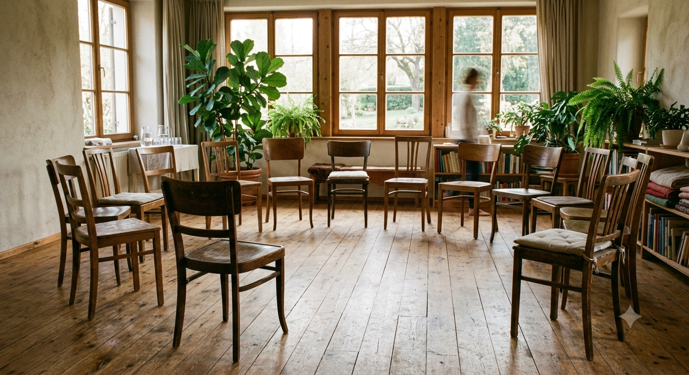

Některé věci neseme, aniž bychom věděli proč.
Opakující se vzorce ve vztazích, únava, která nemá jméno, pocit, že se točíte v kruhu. Rodinné konstelace umí ukázat, odkud to přichází – a jak to nechat jít.
Pro koho tu jsem
Možná to znáte
Pokud jste přikývli aspoň jednou, nejste rozbití. Jen možná nesete něco, co vám nepatří. A to se dá změnit.
Metoda
Co se na semináři vlastně děje
Rodinné konstelace jsou prožitková metoda. Členy vaší rodiny zastoupí lidé ze skupiny a rozestaví se v prostoru. To, co se pak ukáže, se nedá vymyslet – vztahy, napětí a pouta, o kterých se doma mlčí, jsou najednou vidět.
Nemusíte nic dlouze vyprávět ani analyzovat. Konstelace není o mluvení – je o uvidění. A to, co jednou uvidíte, už nejde nevidět.

Kruh židlí, přirozené světlo, klid. Ilustrační vizuál.
První krok je přijít
Semináře vedu ve Šternberku, zhruba jednou měsíčně, v malé skupině. Nemusíte mít připravené téma. Stačí zvědavost.
Podívat se na termíny